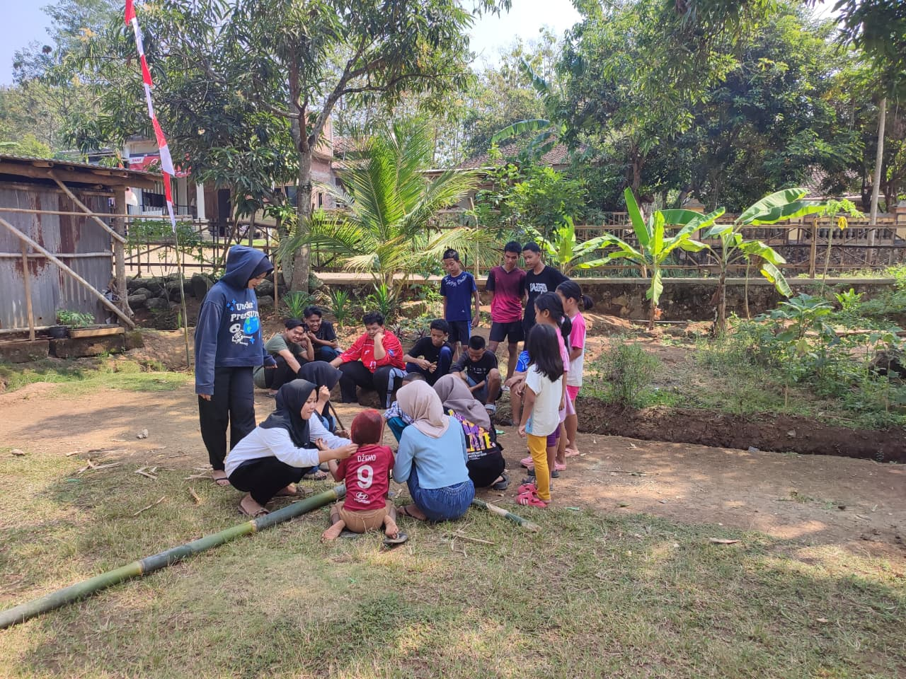
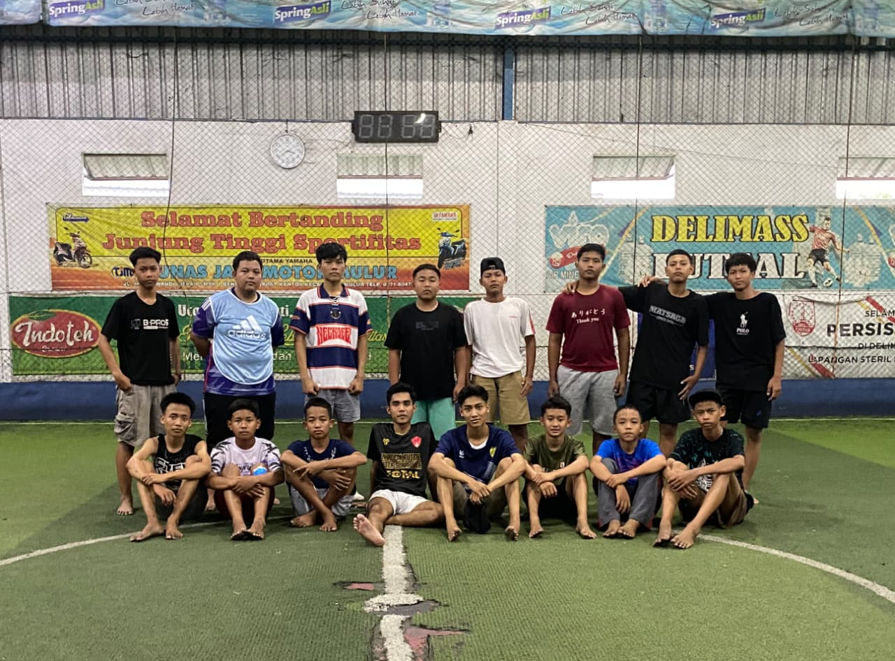
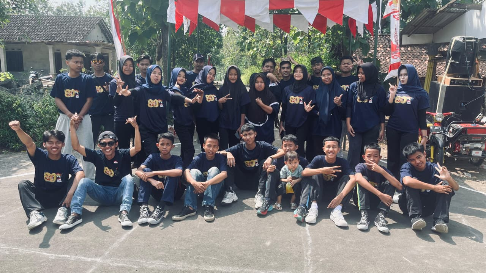
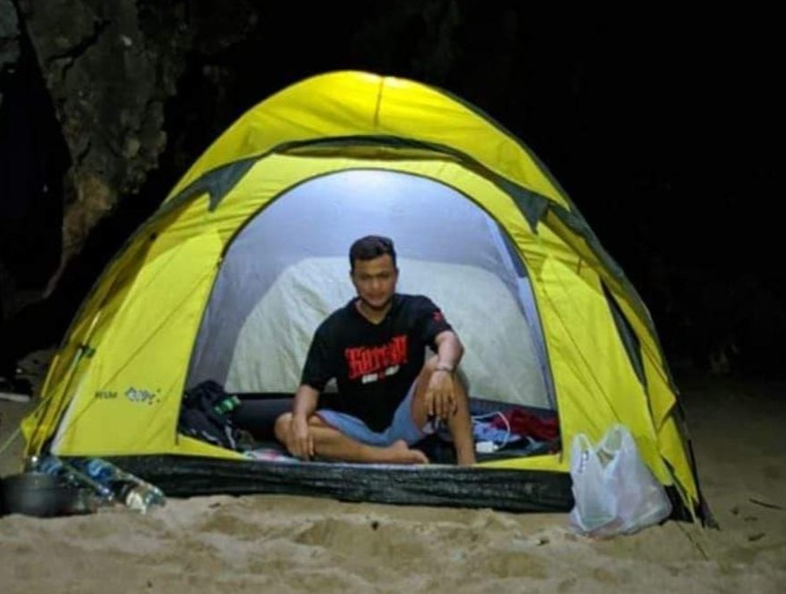
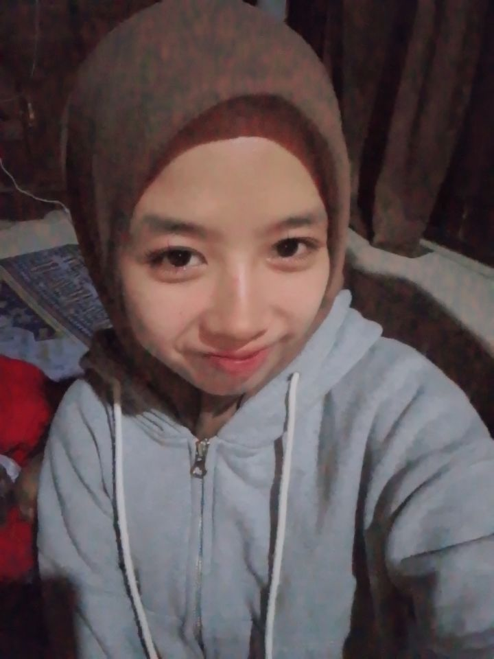
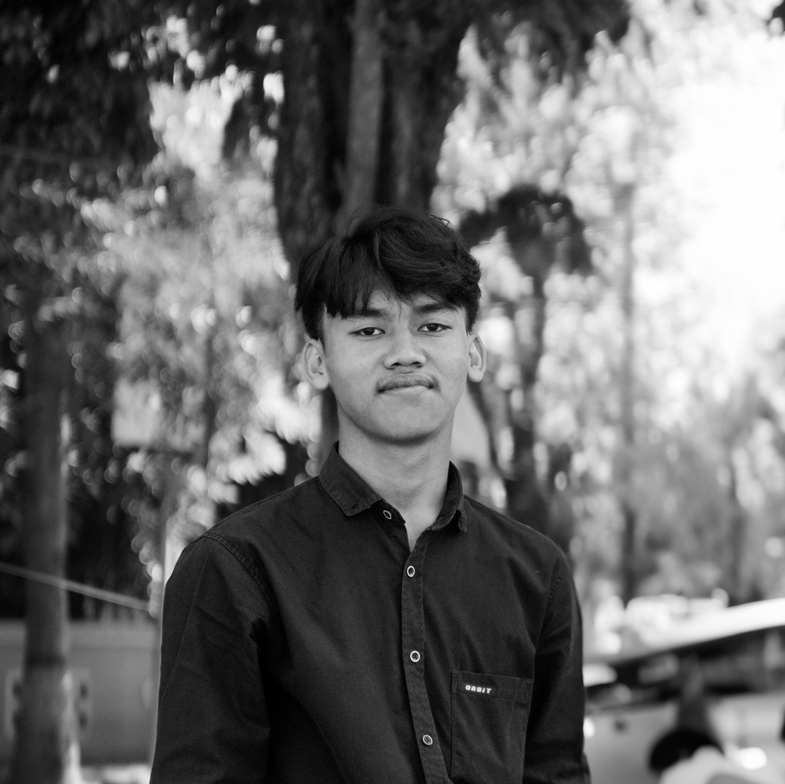
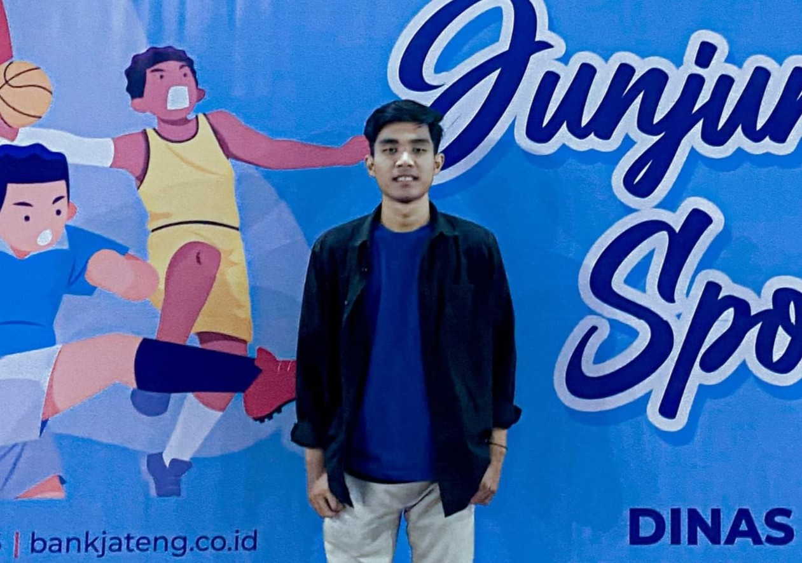

Membangun generasi muda yang berkarakter, kreatif, dan berkontribusi nyata untuk kemajuan desa.
Landasan pergerakan kami untuk masa depan desa.
"Mewujudkan pemuda Manisharjo yang berkarakter, mandiri, berdaya saing global, serta memiliki kepedulian tinggi terhadap lingkungan sosial."
Aksi nyata kami untuk masyarakat.

Bersih Lingkungannya, Kuat Kebersamaannya

Bersatu di Lapangan, Solid dalam Kebersamaan

Wadah kreativitas dan kompetisi positif pemuda.
Wajah-wajah di balik layar organisasi.
Ketua

Wakil Ketua

Sekretaris 1

Sekretaris 2

Bendahara 1
Bendahara 2
Rekam jejak digital kegiatan kami.
Pelajari sejarah desa tercinta.
📍 Alamat:
Dukuh Manisharjo,
Kecamatan Bendosari, Kabupaten Sukoharjo.